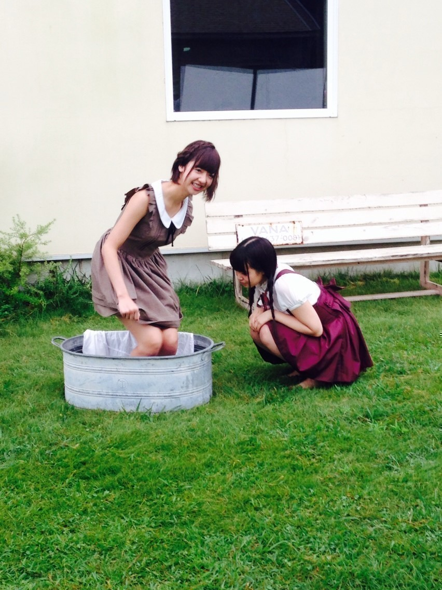
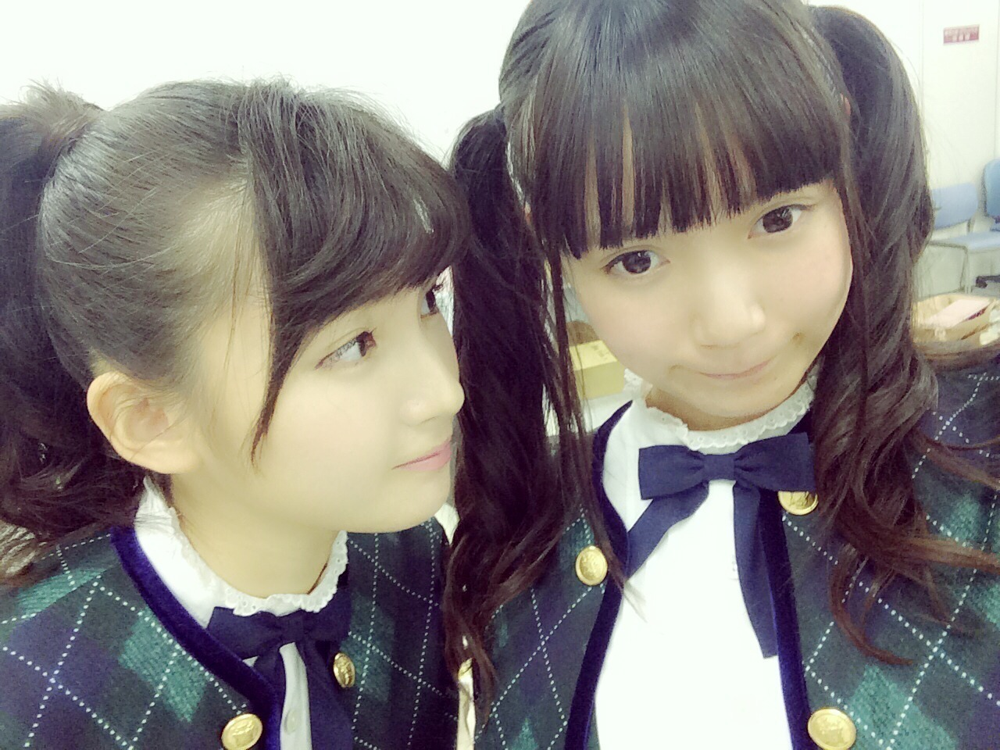
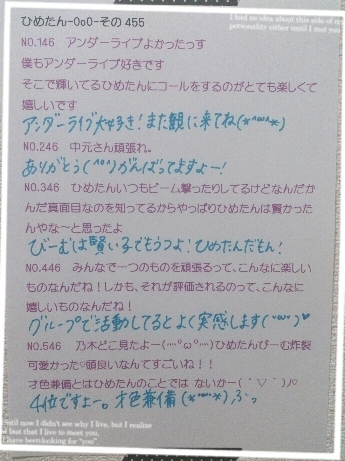

| 2014/10 03 Fri | ひめたん-OoO-その484 |

月刊エンタメ 発売されました！
いつもの高めのくるくるついんてーるの
ひめたんではない
いろんなひめたんが見られますー♪
まあやとのペアってのが
もうすごく嬉しい♡
大人っぽい表情とか普段はしないし
部屋着のカットは個人的にちょっと抵抗が
あったりもするんですが( ºωº )
ひめたんにとっては久々のグラビア
あんまりこんな機会ないし
撮影もとっても楽しかったです！
インタビューのまあや
かわいかった（；；）♡
十人十色～
いくちゃんのインタビューや
MV撮影オフショットもあるよ～
そうそう、月刊エンタメさんね
ひめたんがぷりん好きだからって
差し入れにぷりんあったの！
すてき\❁/

今日はいくちゃんの舞台
「虹のプレリュード」観ました♡
いくちゃんはこの舞台のために
ものすごく頑張っていたから
絶対観たかったんだ！
ストーリーとか
ここがよかった～とか言えないけど
とにかく感動(´;ω;｀)うる～
「虹のプレリュード」のヒロインは
いくちゃんにしかできないって
思いました♡
出演者のみなさん スタッフのみなさん
すてきな舞台をありがとうございました
いくちゃん千秋楽まで頑張ってね！
さゆひめ～

さて、アンダーライブ直前！
いよいよ始まるよ(＊>ω<＊)
サイリウムのおさらい
ひめたんしかーのひとは
ぴんく × ぴんく でお願いします♡
うちわで片手がふさがってるあなたは
一本で大丈夫だよ～
ひめたんも好きだけど
他にも推しがいるあなたも
片手はぴんくだと嬉しい( ´ ▽ ` )
ひめたんうちわ ひめたんタオル
ひめたんTシャツとかあったら
もう意識高い！
前の握手会の時にね
ひめたんうちわ作ったの～って
何人か教えてくれたから
楽しみにしてるんだ
ひめたんコールもたくさん待ってるよ♡♡
そうそう、ひめたんも
みんなに見つけてほしいから
先に言っておくけど
とりあえず前半は
いつもの高めついんてーるくるくるで
ライブに挑みます ⌒°( ^ω^ )°⌒
後半はもしかしたら
飽きて変えちゃうかもだけどね(笑)

アンダーMVの制服
アンダー曲MV予告編公開されました！
みんな観てねー♪

 コスプレとして
コスプレとして
握手会に制服着てっても大丈夫？
制服＼(^o^)／
もちろん大丈夫だよー♪
ひめたんもいつか制服着ようかな～
月刊少女野崎くんでは
どのキャラが好きですか？
前野先生 私は嫌いじゃない派よ(笑)
やっぱ一番は千代ちゃんかな～
千代ちゃんみたいなヘアいつか
やりたいな♡りぼん♡♡
最近ひめたんから釣りメールがきて
ぱやぱやしてるんですが
どうしたらいいですか？
違うの、ほんとに
そんなめーる送ったつもりはないの
ああ泣きそう(；ω；)
ここで説明したってどうせ誰も
信じてくれないんだろうけどさ(；ω；)
真夏さんの運動音痴詐称疑惑は
白ですか？黒ですか？
ひめたんは黒だと思いますね←褒めてる
ひめたんびーむって使い過ぎたりして
MPが足りなくなったりしないんですか？
スクフェスみたい♡
まだ出る？もう疲れたでしょ？
とか聞かれるけど
スタミナよりも手が疲れるかな(笑)
スクフェスのイベント忙しく
コメント遅れた...笑
こら～(｀・ω・´)
ひめはイベント中も日記書いたぞ
＼うみちゃーん／
ひめたんの日記の
コメント欄下２ケタに46を踏んだ方へ
手書きでコメ返するコーナー
＼ ひめたん46 ／

いつもたくさんのコメント
ありがとうございます
あのね、前にもかりんちゃんが
ブログに書いてたけどね
ひめがめーるで
かりんちゃんのかわいい寝顔を
盗撮したんですよ～
そしたらかりんちゃんにバレちゃって
仕返しに今度ひめの寝顔を撮るらしい♡
んあ、忘れてたー秋アニメ！
アカメが斬る！(継続)
弱虫ペダル GRANDE ROAD
TERRA FORMARS
俺、ツインテールになります
オオカミ少女と黒王子
旦那が何を言っているかわからない件
あたりを観ようかな♪
ジャンルばらばら(笑)
ほかにもおすすめなのあるー？
(＊´・ω・＊)
コメント(803)
2014/10/03 00:06